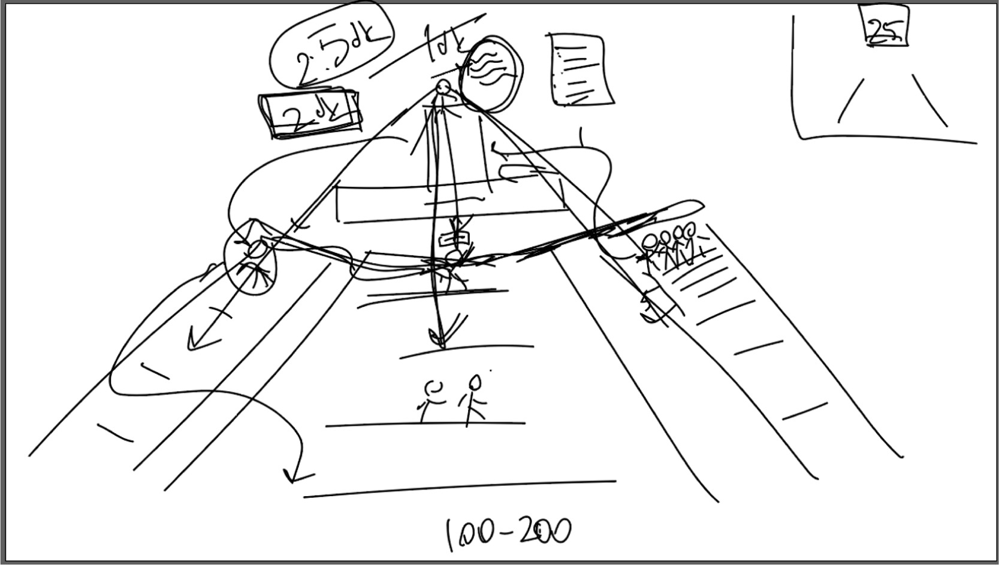

A Critical Review of Sketch Collection Methods: Remembering How Humans Really Sketch
Computers & Graphics (Elsevier), 2026
Do the sketch datasets capture how people actually sketch, or only what is easier to collect? Sketching is a natural way of expressing, processing, and communicating ideas — but as data needs for intelligent systems grow, sketch collection has often shifted toward what is easy to collect rather than what is ecologically valid. In this paper, we argue that sketch datasets are systematically shaped by their collection protocols and experimental conditions, and therefore should be reported transparently and interpreted in light of the conditions that produced them.
We structure this discussion around six contextual factors — time, tools, background, audience, multimodality, and elicitation. Through these factors, we analyze 86 sketch datasets from 2002–2025, suggest practices for collecting sketch data that better reflect the diversity of human sketching, and include sketches from our exploratory study to show how different collection conditions can lead to very different kinds of sketches.